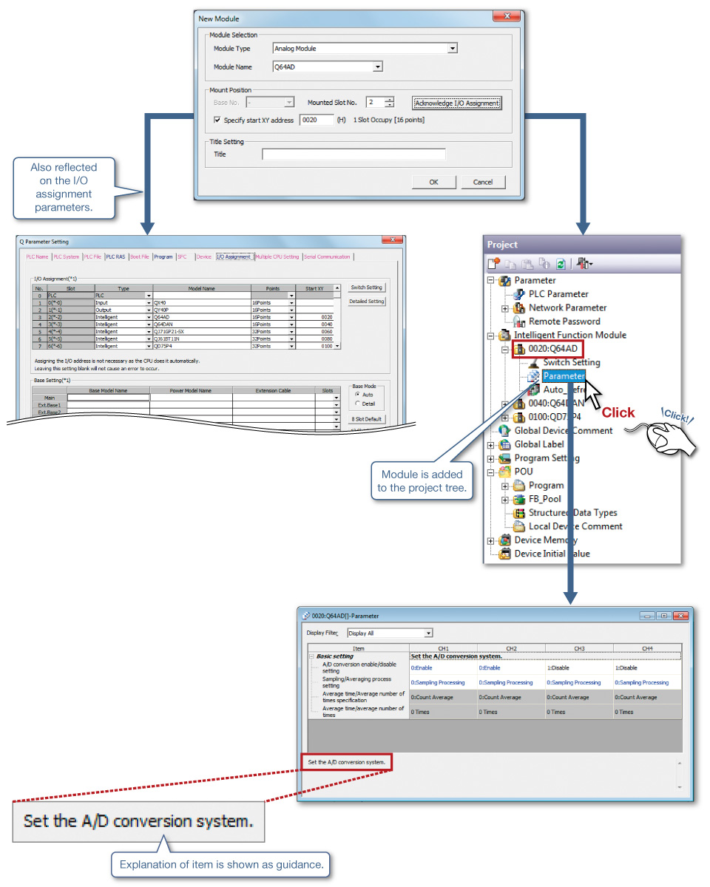
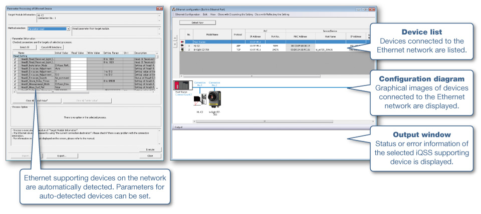
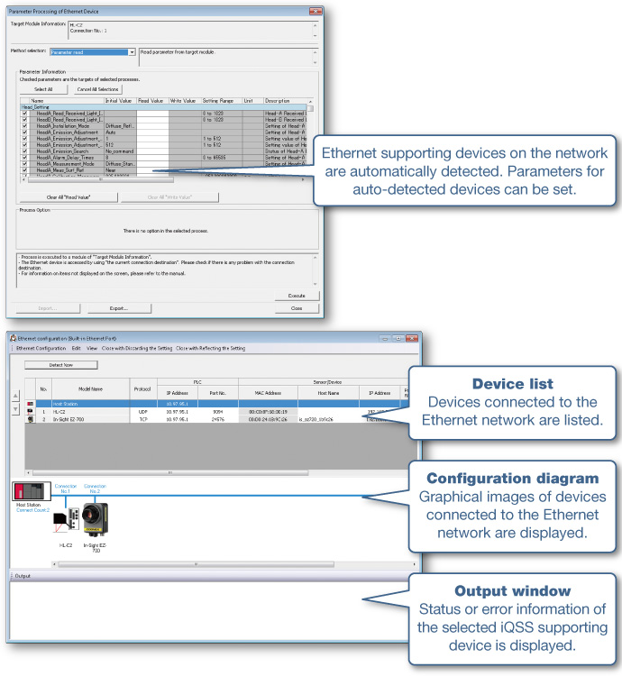

PLC engineering software (MELSEC) GX Works2


Perangkat Lunak Rekayasa PLC Terpadu
Evolusi utama perangkat lunak rekayasa PLC
Sesuai dengan Standar Internasional IEC 61131-3
Kini perangkat lunak rekayasa yang mudah digunakan bukanlah hal yang mengejutkan.
Selain kegunaannya yang canggih, perangkat lunak rekayasa GX Works2 menerapkan konsep arus utama global "pengelompokan" dan "penataan" untuk peningkatan mendasar efisiensi pemrograman.
Gaya rekayasa standar dunia dimulai dengan GX Works2.
Meningkatkan efisiensi desain dan debug
1Menggabungkan fungsi pengaturan yang berguna dari GX Configurator
Fungsi pengaturan modul fungsi cerdas kini terintegrasi dengan GX Works2.
Pengaturan modul fungsi cerdas dikelola dalam proyek GX Works2.
Tambahkan layar modul baru
2Menampilkan penugasan perangkat CC-Link
Diagram konfigurasi jaringan dibuat dengan mengatur gambar perangkat pada jendela Konfigurasi CC-Link menggunakan mouse. Daftar perangkat penyegaran yang ditetapkan ke modul CC-Link ditampilkan.
CSP+*1, yang berisi informasi produk mitra, juga dapat diimpor.
- *1.Lihat situs web Asosiasi CC-Link untuk informasi tentang CSP+.

Informasi penugasan perangkat dapat diekspor ke file CSV dan diimpor ke informasi label global, sehingga memudahkan pemanfaatan informasi dalam pemrograman label.
3Koneksi mudah melalui serial/Ethernet
Dengan menggunakan fungsi protokol yang telah ditetapkan sebelumnya dari GX Works2, koneksi ke perangkat yang ingin Anda ajak berkomunikasi dapat dilakukan dengan cepat hanya dengan memilihnya dari pustaka protokol yang telah ditetapkan sebelumnya.
Meskipun perangkat eksternal tidak terdaftar dalam pustaka protokol yang telah ditetapkan sebelumnya, protokol yang diinginkan dapat dibuat dengan mudah.
Selama komunikasi serial, data yang dikirim, sinyal komunikasi, dan status komunikasi dapat diperiksa tanpa penganalisis saluran, sehingga memudahkan penelusuran kesalahan.
4Tetapkan dan pantau perangkat pendukung iQSS
GX Works2*2 memungkinkan pengaturan dan pemantauan perangkat pendukung iQSS, yang diwakili oleh sensor penglihatan.
- *2.GX Works2 dengan versi 1.492N atau yang lebih baru.
Contoh perangkat pendukung Ethernet
